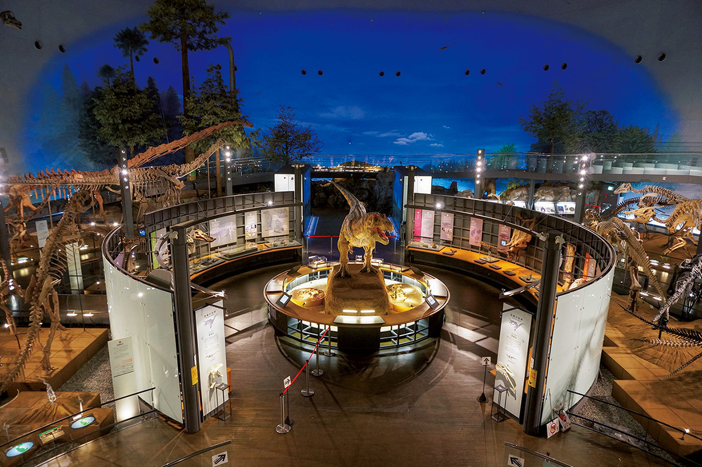
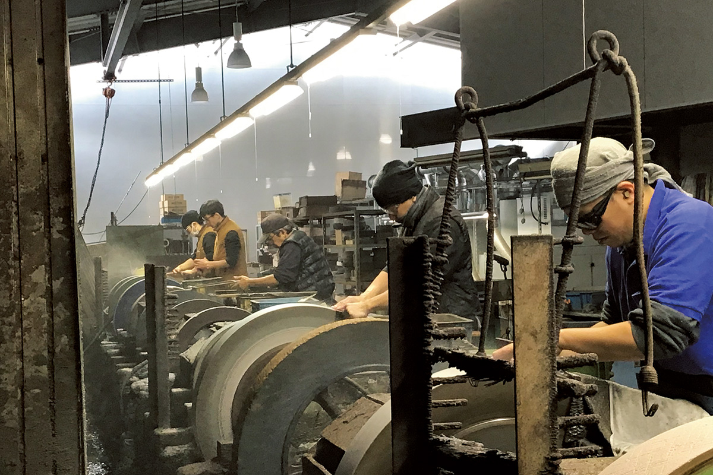
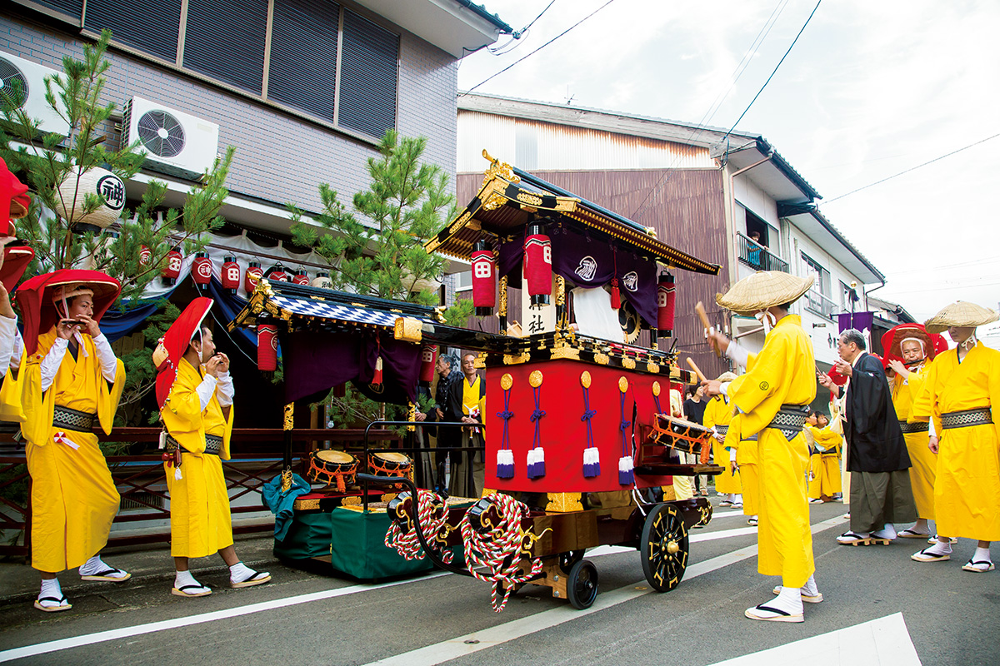
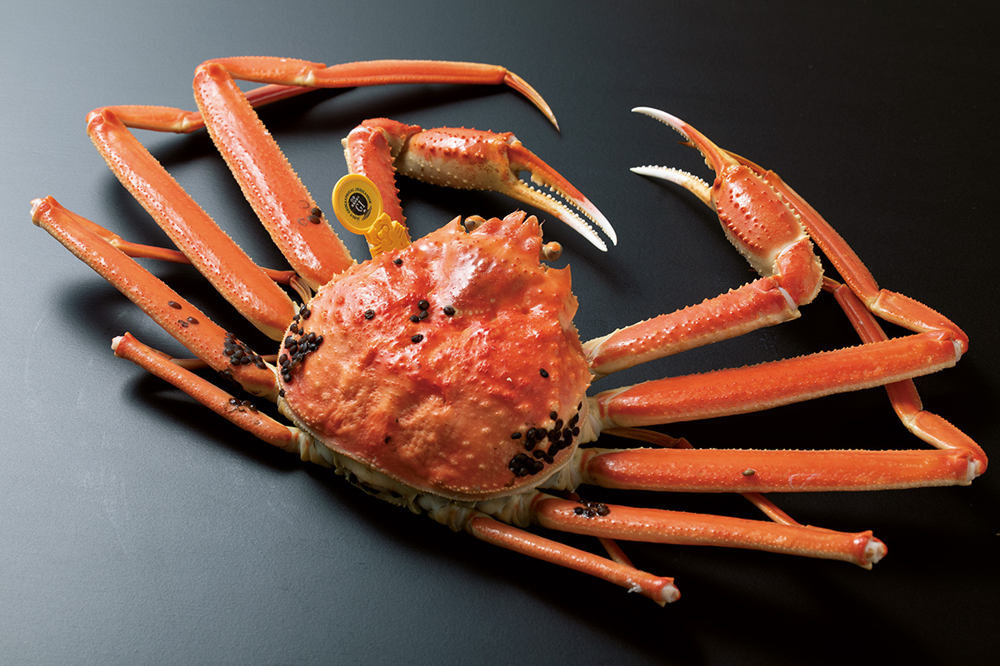
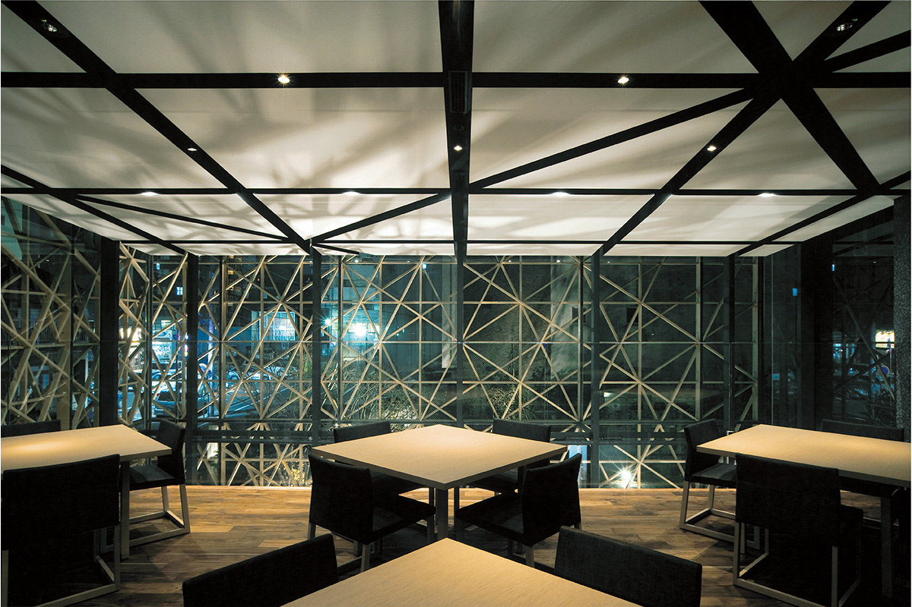
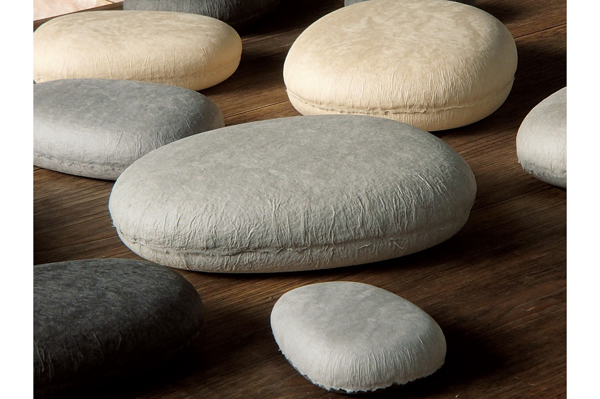
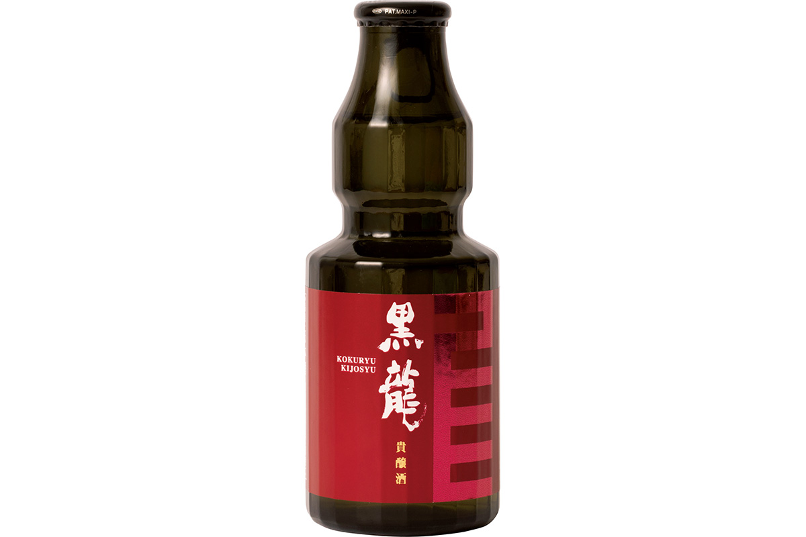
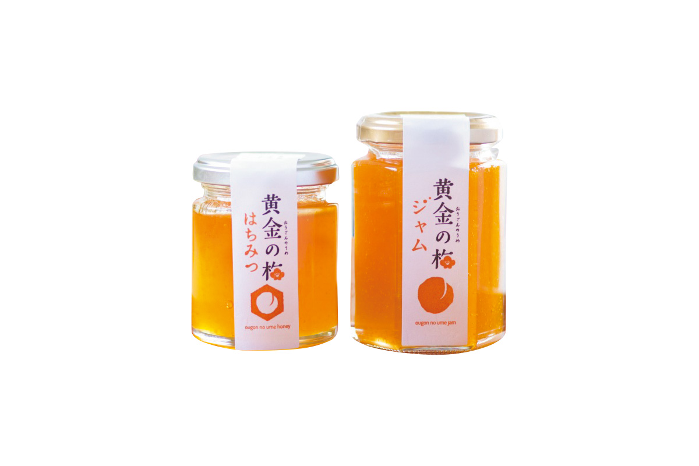
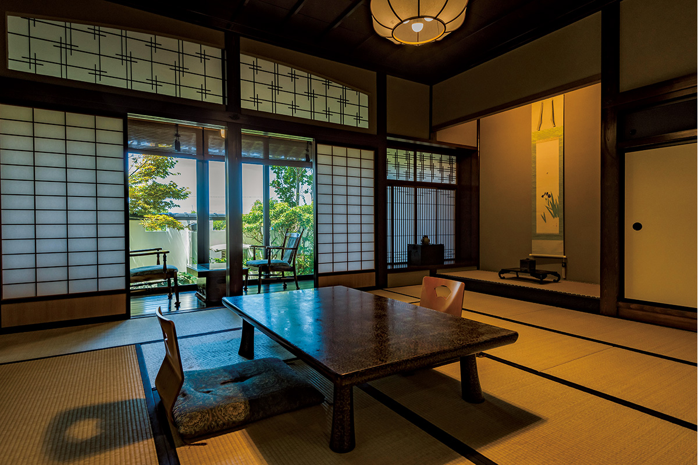

Префектура Фукуи
Фукуи: краб с аукциона, ножи семи веков и кости динозавров

Под высоким тёмным сводом стоят скелеты динозавров, а в центре поднят на задние лапы большой ящер с открытой пастью.
Здесь на аукционе покупают самого дорогого краба страны, куют клинки семьсот лет и хранят скелеты динозавров в одном из лучших музеев мира. Рассказываем, за чем ехать в Фукуи.
О префектуре
Два края одной префектуры
Фукуи лежит на берегу Японского моря, и от неё до Киото всего пара часов пути. Рыба и моллюски залива Вакаса, а также рис здешних полей делают префектуру одним из самых сытных мест страны: тут и богатый улов, и одна из первых в стране рисоварен.
Главная местная знаменитость это краб. Самцов снежного краба, которых ловят у здешних берегов, называют этидзэн-гани, то есть краб Этидзэна, и он известен как «король крабов». Именно этот край считается местом, где ловля снежного краба началась раньше всего в стране, и это единственный краб, который до сих пор отправляют ко двору императора. Помимо еды, здесь делают вещи: на город Сабаэ приходится больше девяноста процентов оправ для очков, которые продают в стране.
А ещё это край динозавров. По числу найденных здесь костей префектура первая в стране, и здешний музей динозавров считают одним из трёх главных в мире. Исторически земля делилась на две области, Этидзэн и Вакаса: после реформы Тайка они долго жили отдельно, в эпоху Эдо в Этидзэне стояли владения рода Фукуи и земли под управлением ставки, а в Вакасе правили роды Кёгоку и Сакаи. Только в 1881 году границы стали такими, как сейчас, а весной 2023 года сюда должна прийти линия синкансэна от Канадзавы через Фукуи до Цуруги.
Что посмотреть
Деревня, где куют ножи
Такэфу, деревня ножей
Ковка клинков в Этидзэне идёт семьсот лет, и в этой общей мастерской работает тридцать кузнецов: здесь показывают, как из полосы металла получается нож, и дают попробовать выковать его самому. Готовые ножи и ножницы тут же можно купить по цене производителя.

- Адрес
- 22-91 Yogawa-cho, Echizen, Fukui
- Телефон
- +81 778-27-7120
Что ещё посмотреть
- Тодзинбо, скалы над морем, которые обрываются в воду
- Пять озёр Миката, цепочка озёр между морем и горами
- Деревня керамики Этидзэн, мастерские и печи гончаров
Праздники
Три века одного осеннего обряда
Праздник Ходзё-э в Обаме
Это самый большой осенний праздник области Вакаса, и его истории около трёхсот лет. За два дня здесь проносят переносное святилище, везут праздничные повозки и показывают обряды: священную музыку кагура, удары в барабаны, которые здесь зовут «ударами шестом», и танец льва.

- Период
- середина сентября
- Место
- святилище Обама Ояма Хатиман и улицы города Обама
Другие праздники
- Праздник Сёдзи в Кацуяме, зимнее шествие с высокими украшениями
- Праздник Микуни в Сакаи, летний праздник с повозками и музыкой
- Праздник в Цуруге, городское шествие у порта
Музеи и архитектура
Спуск в глубину к динозаврам
Музей динозавров префектуры Фукуи
Здание спроектировал архитектор Курокава Кисё. Главный замысел виден ещё на подходе: длинный эскалатор опускает посетителя на самую нижнюю глубину, и уже оттуда человек попадает в круглый зал с экспозицией, так что музей переживают как спуск в землю, к тем слоям, где лежат кости.
- Адрес
- 51-11 Terao, Muraoka-cho, Katsuyama, Fukui
- Телефон
- +81 779-88-0001
Что ещё посмотреть
- Музей годовых слоёв, экспозиция о глине, в которой читают климат прошлого
- Художественный музей города Фукуи, живопись и графика местных мастеров
- Музей дзёмон в Микате, находки древних поселений у озёр
Местная кухня
Король крабов на льду
Краб этидзэн-гани
Есть поговорка, что на западе страны король крабов это этидзэн-гани. Так называют только самцов снежного краба, у которых длинные тонкие ноги и сладкое мясо; ловить их разрешают зимой, с ноября по март, и лучшие экземпляры, которые продают в лавках и на аукционах, помечают специальной жёлтой биркой. В рестораны за таким крабом приезжают со всей страны.

Что ещё попробовать
- Соба с тёртой редькой, холодная гречневая лапша по-этидзэнски
- Корокони из таро, местные клубни, тушённые мелкими шариками
- Хэсико, соль-выдержанная сельдь, местная зимняя заготовка
Где поесть
Новая пристройка к старому дому
«Кайкатэй соу-ан»
Это новый корпус почтенного здешнего дома кухни, которому сто тридцать лет, и его построил архитектор Кума Кэнго. Шеф Хатити Кумити в своё время был избран самым молодым современным мастером страны, а подачи здесь проще, чем в большом доме, поэтому в зал приходят просто поесть.

- Адрес
- 3-9-21 Chuo, Fukui, Fukui
- Телефон
- +81 776-50-1070
- Часы
- с 11:30 до 14:00 и с 17:30 до 22:00
- Выходные
- воскресенье и праздники
- Сайт
- kaikatei.biz
Ремёсла
Бумага, которую делают руками
Коробочка «коббл» из бумаги Этидзэн
Бумагу в Этидзэне делают уже полторы тысячи лет, и в этой мастерской её по-прежнему отливают руками. Из мягкого плотного листа собирают маленькую коробочку с округлыми краями: её приятно держать в ладони, и внутри она кажется тёплой.

- Телефон
- +81 778-43-0639
- Сайт
- washicco.jp
Что привезти
Сакэ как десертное вино и сливовый джем
Кисю «Кокурю» завода Кокурю
Этот вид сакэ варят по старинному приёму: часть воды заменяют молодым сакэ, поэтому напиток получается очень сладким, почти как десертное вино. Завод Кокурю считается одним из самых закрытых в стране, а маленькая бутылка объёмом 150 миллилитров стоит 550 иен.

- Телефон
- +81 776-61-6110
- Сайт
- kokuryu.co.jp
Джем и мёд из золотой сливы
Набор из двух стеклянных банок делают из местных слив и мёда; в них ценят сладость с фруктовой кислинкой, а весь набор из двух банок стоит 3500 иен.

- Телефон
- +81 776-23-7049
- Сайт
- ougonnoume.com
Где остановиться
Старый дом, перенесённый к морю
Гостиница кухни «Ямадзаки»
Этот дом сложили сто сорок лет назад и потом разобрали и собрали заново на берегу Этидзэна, и в нём всего шесть комнат. Хозяин сам едет на утренний аукцион и берёт крабов и рыбу, поэтому ужин здесь зависит от того, что в тот день пришло к берегу.

- Адрес
- 16-53-1 Kururi, Echizen-cho, Nyu, Fukui
- Телефон
- +81 778-37-1016
- Комнат
- 6
- Цена
- от 19 000 иен за ночь с двумя приёмами пищи, налоги и банный сбор отдельно
- Сайт
- yamazaki-r.co.jp
Местный диалект
Как здесь говорят «очень вкусно»
- хиддэ монни умаин ядзаочень вкусно
- русу дэ дарэ мо эн нодома никого нет
- отёкин сэн то, акан дзанадо сесть прямо
- хоя-хоя, мо ои-токо сада-да, давайте уже закончим
Рекорды
В чём Фукуи первая
- №1 производство оправ для очков: первое место в стране
- №1 доля людей, которые становятся директорами: первое место
- №1 доля семей, где работают оба супруга: первое место
Вопросы и ответы
Что ещё спрашивают о Фукуи
У какой сладости название пошло от чувства шёлковой ткани?
У моти хабутаэ. В эпоху Тайсё на префектуру приходилось шесть десятых всего производства ткани хабутаэ, и сладость делают такой, чтобы она была мягкой, как этот шёлк. Это местное угощение когда-то держали при дворе рода Фукуи, и его до сих пор продают в лавках города.
С каким местом в Италии сравнивают руины города Асакура?
С Помпеями. Дом рода Асакура и город вокруг него, которые сто лет правили Этидзэном, нашли при раскопках спустя больше четырёх веков, и за сохранность улиц это место зовут «японскими Помпеями».
Справочник
Фукуи в цифрах
Общие сведения
| Административный центр | Фукуи |
| Муниципалитеты | 9 городов, 8 посёлков |
| Площадь | 4191 кв. км |
| Население | 770 тысяч человек |
| Плотность населения | 184,7 человека на кв. км |
| Туристов в год | 8,07 млн |
| Дерево префектуры | сосна |
| Цветок префектуры | нарцисс |
| Птица префектуры | дрозд |
Климат
| Средняя температура | +15,3 |
| Максимум | +33,7 |
| Минимум | минус 1,6 |
| Осадки | 2632 мм |
| Ясных дней | 22 |
| Дождливых дней | 175 |
| Снежных дней | 60 |
Для путешественника
| Онсэнов | 40 |
| Гостиниц и рёканов | 590 |
| Музеев искусств | 8 |
| Музеев | 74 |
| Митиноэки, придорожных станций | 15 |
| Национальное сокровище | колокол из святилища Цуруги |
| Важных культурных ценностей | 113, из них 6 национальных сокровищ |
| Исторических мест | 25 |
| Живописных мест | 15 |
| Природных памятников | 21 |
| Национальные парки | Хакусан, берег Этидзэн-Кага, залив Вакаса, всего 3 |
Природные памятники
- Белоплечий орёл, крупная хищная птица здешних зим
- Саговник в Дзёсине, редкое растение у моря
- Клён в храме Бантоку-дзи, старое дерево у храма
- Ручей с колюшкой у Хонган, место обитания редкой рыбы